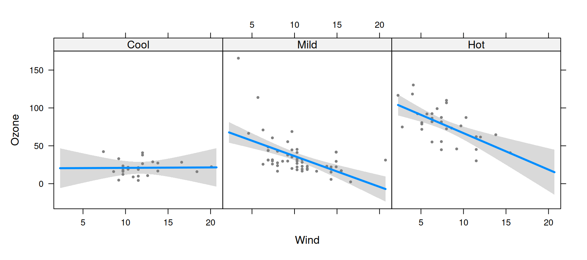

This guide is intended to briefly demonstrate the basic usage of visreg.
For details on visreg syntax and how to use it, see:
- The online documentation at https://pbreheny.github.io/visreg contains many examples of visreg plots and the code to create them.
- Breheny P and Burchett W (2017). Visualization of Regression Models Using visreg. The R Journal, 9: 56-71.
- The R help files
?visreg,?plot.visreg, and?visreg2d
The website focuses more on syntax, options, and user interface, while the paper goes into more depth regarding the statistical details.
The basic idea of visreg is that you fit some sort of regression model and visreg provides a convenient interface for visualizing it. Let’s fit the following model:
fit <- lm(Ozone ~ Solar.R + Wind + Temp, data=airquality)We can then visualize what the model says about the relationship between the outcome and, say, wind, with:
visreg(fit, "Wind")
The plot displays (a) the model’s estimated relationship between wind and ozone, (b) a confidence band about that estimate, and (c) the partial residuals, so that one can assess model fit.
visreg correctly displays factors, transformations, etc., and has many options to produce many types of plots. As another example, suppose the model contains an interaction:
airquality$Heat <- cut(airquality$Temp, 3, labels=c("Cool","Mild","Hot"))
fit <- lm(Ozone ~ Solar.R + Wind*Heat, data=airquality)Visreg can plot cross-sections of this fit, either in separate panels:
visreg(fit, "Wind", by="Heat")
Or overlaid on top of one another:
visreg(fit, "Wind", by="Heat", overlay=TRUE)
Or as a two-dimensional filled contour plot (level plot):
visreg is not limited to linear regression models. It can be used with virtually any type of model in R that provides generic functions for model.frame and predict, such as glm, coxph, rlm, gam, locfit, quantreg, gbm, randomForest, etc. See the homepage for additional examples with other types of models. If there is a model that you think should work with visreg but doesn’t, please open an issue.